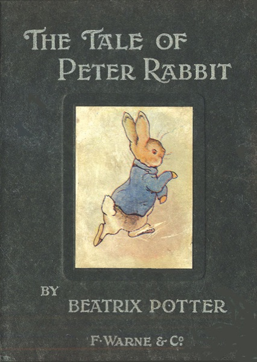
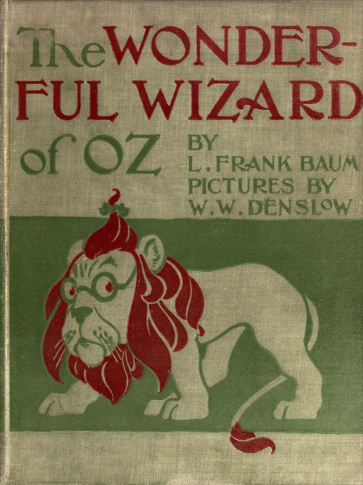
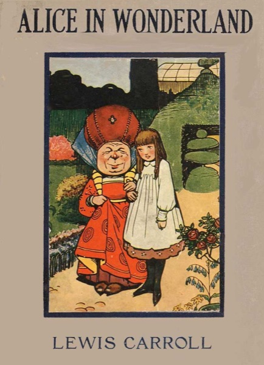

DyslexiaBuddy for iOS 27: Everything New in Version 6



DyslexiaBuddy 6 is the biggest update we have made. We rebuilt the app for iOS 27, so it looks and feels like the rest of your iPhone. Then we spent every release since then on one question: what helps a reader get from a hard page to a confident read?
This article collects everything that is new in version 6, from the first iOS 27 release to version 6.2. If you last opened DyslexiaBuddy in the summer, this is what changed.
A new look for iOS 27
DyslexiaBuddy now uses Liquid Glass, the new design language of iOS 27. The controls float lightly above your text, so the page stays the most important thing on the screen.
- Home is one simple reading list, with your documents and the ways to add new ones.
- Tabs for Home, Library, Tutor, and Settings keep the main parts of the app in one place.
- The reader has quieter controls and rounded highlights that are easier to follow.
- On iPad, the reader toolbar has fewer buttons. The actions you use less often are in the ellipsis menu.
Voices that sound like people
Listening is the center of DyslexiaBuddy, so voices got the most work.
- Premium voices run on your device. On iOS 27, the 28 premium voices use Apple's Core AI. They do not need an internet connection after you download them once.
- Try before you subscribe. The Voice Library is open to everyone. Listen to any premium voice first. If you then subscribe, that voice stays selected.
- Every English voice on your device. The free voice list now shows all English voices on your iPhone, iPad, or Mac, with the best quality first. A short video guide shows how to download more free Enhanced and Premium voices from Apple.
- More natural reading. Read-aloud now pauses between paragraphs, and it pronounces names and brand words from a dictionary of more than 77,000 extra words. "Los Angeles" and "Wi-Fi" sound right.
A tutor that knows your page
The reading tutor uses Apple Intelligence. It works from the document you are reading, so you can ask a question without copying text into a chat.
- The tutor can look at the pages you scanned, not only the text.
- It can find answers in your other saved documents.
- In the Tutor tab, you can pick a document from your library and ask about it.
- On iOS 27, the tutor can use Apple's Private Cloud Compute for stronger answers. Apple designed Private Cloud Compute so that your data is not stored or shared. If it is not available, the tutor uses the model on your device.
Built for the moment of confusion
The tutor still gives short, plain answers. It breaks hard words into syllables and keeps explanations focused, so you can go back to the page.
Better scans and reading tools
DyslexiaBuddy now reads pages with Apple's structured document recognition. It keeps paragraphs, columns, and headings in order, so a scanned worksheet reads like a real page.
New Reading Tools in the reader help with the text itself:
- Summary: the main ideas in short points.
- Translate: translate the reading into another language, on your device.
- Tidy: find broken lines, stray hyphens, and mixed columns. You see the suggestion before anything changes.
You can also share photos and PDFs to DyslexiaBuddy from other apps, such as Photos and Files.
A free Library of classic books
New in 6.2: sometimes the hardest part of reading practice is finding something good to read. The Library tab has 14 public-domain children's books, each with its real first-edition cover. They open in the same reader as your scans, so fonts, colors, read-aloud, and the tutor all work. They are part of the app, so they also work offline.
- First stories, ages 5 to 7: The Tale of Peter Rabbit, The Tale of Benjamin Bunny, The Tale of Squirrel Nutkin, The Tale of Tom Kitten, The Tale of Jemima Puddle-Duck, and The Velveteen Rabbit.
- Chapter books, ages 8 to 10: Alice's Adventures in Wonderland, The Wonderful Wizard of Oz, The Adventures of Pinocchio, and Grimms' Fairy Tales.
- Classic novels, ages 10 and up: The Wind in the Willows, Black Beauty, Treasure Island, and Anne of Green Gables.
You can filter the shelf by topic: Animals, Adventure, Magic, Fairy tales, Friendship, and Funny.
Chosen with care
The texts come from Project Gutenberg and are edited for easier reading. We left out some famous titles because they contain racist language or stories that we do not want to put in front of young readers.
Siri, Spotlight, and widgets
You can now start reading without opening the app first.
- Say "Continue reading in DyslexiaBuddy" to go back to your place.
- Say "Read this in DyslexiaBuddy" when a document is on screen. Siri knows which document you mean, even a scan with no title.
- Say "Add to DyslexiaBuddy" to import something new.
- Find your documents in Spotlight by title or by their section headings. The body of your documents is not added to the search index.
- Home Screen widgets (premium) show your recent documents with your progress, and give one-tap buttons to scan or import.
On your Mac, and without an install
DyslexiaBuddy is now on the Mac, with the same reader, voices, tutor, and Library. On a Mac with no camera for scanning, you can import files and photos instead.
The DyslexiaBuddy App Clip lets someone try the reader before they install the full app. Scan a page or point the camera at a paragraph, and the App Clip reads it aloud.
Accessibility, everywhere
A reading app for dyslexia must work for every reader. In version 6, every control has a name for VoiceOver and Voice Control, and every text grows with Larger Text. The app follows Reduce Motion, voice previews have captions, and brand colors meet WCAG AA contrast.
How to get it
Update DyslexiaBuddy from the App Store. After the update, a short What's New screen shows the newest changes one time. DyslexiaBuddy is built for iOS 27 and also works on iOS 26. Some features, like Core AI voices, need iOS 27, and the tutor and Reading Tools need a device with Apple Intelligence.